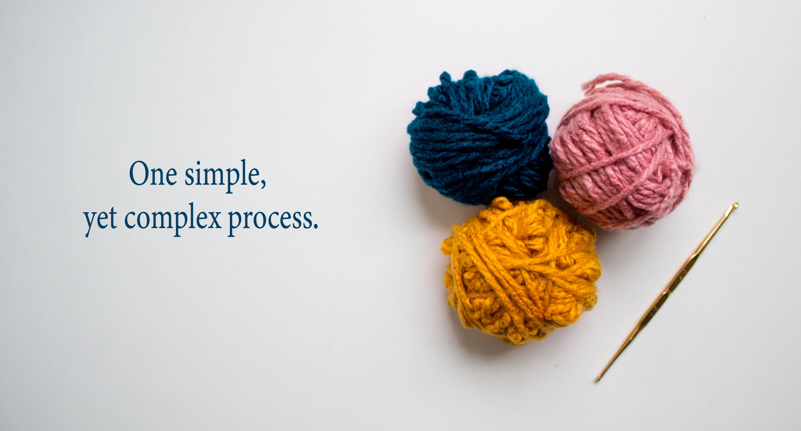

I turned an illustration into a tapestry!

"Another point of view"
This project represents another point of view of how to see yourself. It reminds you that you are on a floating rock... which can be scary or reliefing. I created the artwork using Adobe Illustrator and then projected into Stitch Fiddle; after that I begin to crochet the final tapestry.

Other tapestries
These are other tapestries; different sizes, different stories.